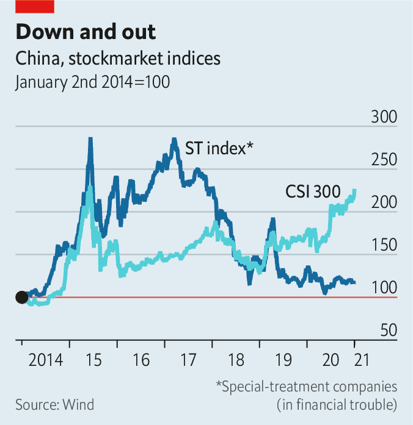

2021-01-21T13:50:42+00:00
China’s stockmarket
中国股市
中國股市
Bring out your dead
清理尸骸
清理屍骸
China wants to clear the dross from its stock exchanges
中国想要清除其证券交易所里的糟粕
中國想要清除其證券交易所里的糟粕
LIKE MANY Chinese companies on the stockmarket, Gangtai Holding, a jewellery-to-property conglomerate, flaunts its listing. It displays its ticker number, 600687, prominently on its website and in its ads. But not for much longer. On January 7th Gangtai began a 30-day period almost certain to end with its ejection from the Shanghai Stock Exchange. It is one of a growing number of Chinese companies to face delisting at home.
与股市里的许多中国公司一样，业务覆盖珠宝到地产的企业集团刚泰控股也炫耀自己上市公司的地位。它将股票代码600687展示在官网和广告的显著位置。但这没持续太久。1月7日，刚泰进入了为期30天的退市整理期，几乎可以肯定的是，这之后它会被踢出上海证券交易所。除它之外，还有越来越多中国公司在国内面临退市。
與股市裡的許多中國公司一樣，業務覆蓋珠寶到地產的企業集團剛泰控股也炫耀自己上市公司的地位。它將股票代碼600687展示在官網和廣告的顯著位置。但這沒持續太久。1月7日，剛泰進入了為期30天的退市整理期，幾乎可以肯定的是，這之後它會被踢出上海證券交易所。除它之外，還有越來越多中國公司在國內面臨退市。
In recent months all the delisting talk has been about the removal—or not—of Chinese companies from American exchanges. Within China, though, a potentially more important kind of delisting is on the agenda: regulators have made it easier to strip lousy firms of their listing status. It is the latest in an array of reforms aimed at modernising the stockmarket, long seen more as a casino than an efficient allocator of capital.
近几个月来，所有关于退市的议论说的都是中国公司是否会被踢出美国交易所。不过，在中国国内，一种或许更重要的退市正在被提上日程：监管机构已经把撤销劣质公司的上市公司身份变得更加容易。这是一系列股市现代化改革中最新的一项。长期以来，中国股市更多被视为赌场，而不是有效的资本配置渠道。
近幾個月來，所有關於退市的議論說的都是中國公司是否會被踢出美國交易所。不過，在中國國內，一種或許更重要的退市正在被提上日程：監管機構已經把撤銷劣質公司的上市公司身份變得更加容易。這是一系列股市現代化改革中最新的一項。長期以來，中國股市更多被視為賭場，而不是有效的資本配置渠道。
Delistings are a staple of healthy stock exchanges, a mechanism for clearing out the dross. In America a few dozen companies are typically forced off its exchanges every year, often because of low market values. In the early 2000s, after the dotcom bust, annual delistings climbed to nearly 400. China, by contrast, has averaged seven delistings a year over the past decade, despite having more than 4,000 listed companies, nearly as many as America.
退市是健康的证券交易所常见的做法，是一种清理糟粕的机制。在美国，每年通常都有几十家公司被迫退市，往往是因为市值过低。本世纪初，在互联网泡沫破裂后，每年退市的公司一度增至近400家。相比之下，尽管中国有4000多家上市公司，几乎与美国一样多，但过去10年平均每年只有七家退市。
退市是健康的證券交易所常見的做法，是一種清理糟粕的機制。在美國，每年通常都有幾十家公司被迫退市，往往是因為市值過低。本世紀初，在互聯網泡沫破裂後，每年退市的公司一度增至近400家。相比之下，儘管中國有4000多家上市公司，幾乎與美國一樣多，但過去10年平均每年只有七家退市。

Delistings have been so infrequent in China mainly because, relative to demand, listings themselves were hard to come by. “Even if a company is nearly bankrupt, the shell value of being listed is really high. Just by staying alive it can find a buyer,” says Lu Fangzhou of the University of Hong Kong. This has made for perverse incentives. Listed firms in financial trouble in China are classified as “special treatment”, abbreviated to ST before their ticker name, to warn off investors. Instead, however, it is often an invitation to bid up their prices, as buyers might emerge. ST stocks are volatile, but their returns have occasionally beaten the overall market (see chart).
退市在中国如此少见，主要是因为相对于需求而言，上市本身很难得。“即使一家公司濒临破产，上市的空壳价值也非常高。只要能活下去，就能找到买家。”香港大学的卢方舟说。这就导致了反向激励。在中国，出现财务问题的上市公司被列为“特别处理”（Special Treatment），在其股票名称之前会冠以缩写ST以警告投资者。但是，这反而常常会导致人们推高它们的价格，因为可能会出现买家。ST股票波动较大，但回报有时会超过整体市场（见图表）。
退市在中國如此少見，主要是因為相對於需求而言，上市本身很難得。“即使一家公司瀕臨破產，上市的空殼價值也非常高。只要能活下去，就能找到買家。”香港大學的盧方舟說。這就導致了反向激勵。在中國，出現財務問題的上市公司被列為“特別處理”（Special Treatment），在其股票名稱之前會冠以縮寫ST以警告投資者。但是，這反而常常會導致人們推高它們的價格，因為可能會出現買家。ST股票波動較大，但回報有時會超過整體市場（見圖表）。
That has recently begun to change. Regulators relaxed controls over initial public offerings, paving the way for hundreds of new listings. The value of being a shell diminished. The delisting reform, introduced on the final day of 2020, attacks the problem from the other end. Companies with share prices below 1 yuan ($0.15) for 20 consecutive days will now face automatic delisting. Those that fraudulently overstate their earnings by 100% for three years are on the chopping block, too.
这种情况最近开始发生变化。监管机构放松了对IPO的管控，为数百家公司的上市铺平了道路。壳公司的价值降低了。在2020年最后一天推出的退市改革从另一个角度解决这个问题。股票收盘价连续20个交易日低于1元的公司将面临自动退市。连续三年虚报利润超过100%的公司也会被砍掉。
這種情況最近開始發生變化。監管機構放鬆了對IPO的管控，為數百家公司的上市鋪平了道路。殼公司的價值降低了。在2020年最後一天推出的退市改革從另一個角度解決這個問題。股票收盤價連續20個交易日低於1元的公司將面臨自動退市。連續三年虛報利潤超過100%的公司也會被砍掉。
The process will also become much faster, eliminating an intervening trading suspension—when troubled companies could find buyers. China’s delistings could increase to about 50 a year. Some investors complain the rules are still too lenient. For example, Luckin Coffee, a Chinese would-be rival to Starbucks, was kicked off Nasdaq for fabricating transactions; in China its listing probably could have survived. But Zhou Maohua of China Everbright Bank counsels patience, saying the rules will be adjusted over time.
这一进程的推进速度还会大大加快，省去退市前停牌这一步——问题公司可能会在此期间找到买家。中国的退市数量可能会增加到每年约50家。一些投资者抱怨这些规定仍然过于宽松。例如，有志于挑战星巴克的中国公司瑞幸咖啡因伪造交易被纳斯达克踢出，而换在中国，它也许还能保住上市公司的地位。但中国光大银行的周茂华建议要有耐心，他认为随着时间的推移相关规定还会调整。
這一進程的推進速度還會大大加快，省去退市前停牌這一步——問題公司可能會在此期間找到買家。中國的退市數量可能會增加到每年約50家。一些投資者抱怨這些規定仍然過於寬鬆。例如，有志於挑戰星巴克的中國公司瑞幸咖啡因偽造交易被納斯達克踢出，而換在中國，它也許還能保住上市公司的地位。但中國光大銀行的周茂華建議要有耐心，他認為隨着時間的推移相關規定還會調整。
In Gangtai’s case, the company overstretched itself. The gold-miner and jewellery-maker got pulled into property, even planning a skyscraper, and bought Buccellati, an Italian jeweller. But as it racked up huge losses, it defaulted on bonds and sold its best assets. Delisting is its latest humiliation. At least it can console itself that it will soon have plenty of company. ■
在刚泰的案例中，这家公司步子迈得太大了。本来经营金矿和和珠宝制造的它卷入了房地产行业，甚至计划建造一栋摩天大楼，还收购了意大利珠宝公司布契拉提（Buccellati）。但随着巨额亏损不断累积，它发生了债券违约，并卖掉了自己最好的资产。摘牌是它最新的耻辱。至少它可以聊以自慰的是，很快就会有很多公司与它为伴。
在剛泰的案例中，這家公司步子邁得太大了。本來經營金礦和和珠寶製造的它捲入了房地產行業，甚至計劃建造一棟摩天大樓，還收購了意大利珠寶公司布契拉提（Buccellati）。但隨着巨額虧損不斷累積，它發生了債券違約，並賣掉了自己最好的資產。摘牌是它最新的恥辱。至少它可以聊以自慰的是，很快就會有很多公司與它為伴。